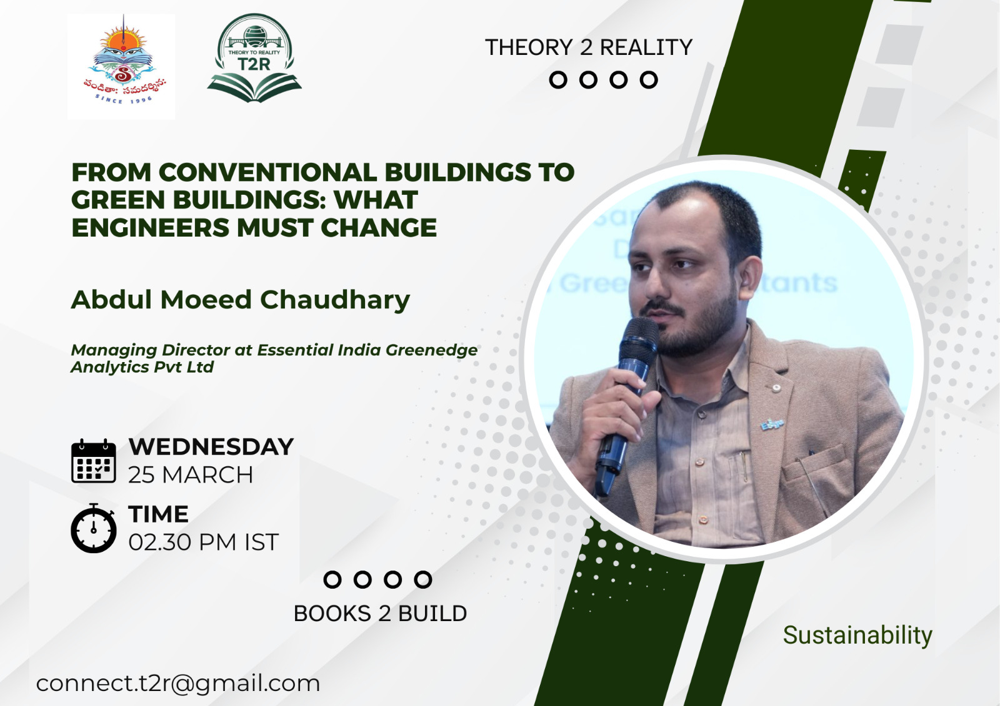
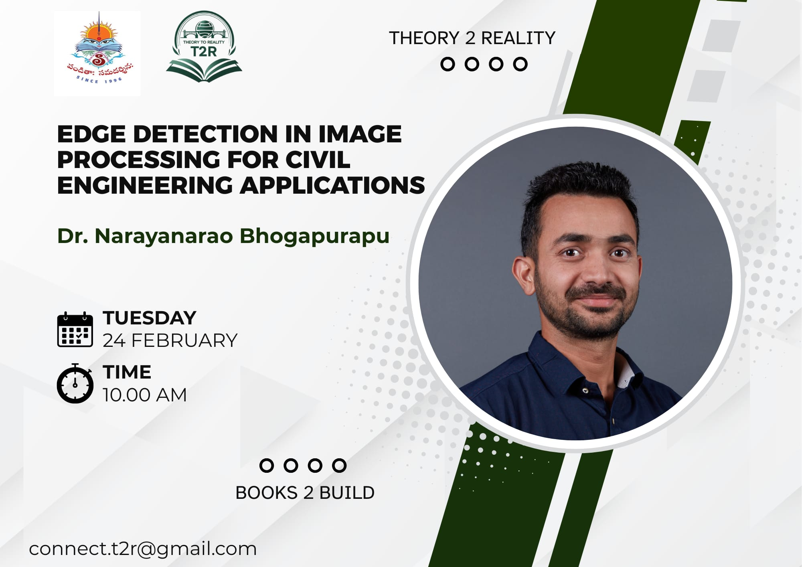

Sessions
Register for upcoming sessions or revisit past ones with recordings.

Completed
Guest Lecture
Electric Vehicles and Powertrain Dimensioning
Explore how embedded systems power the next generation of electric vehicles in India. From battery management to motor control.
G
Gunank Hora
System Engineer – Electric Drive, Axilift Electric Trucks

Completed
Guest Lecture
From Conventional Building to Green Buildings: What Engineer Must Change
This session highlights the shift from traditional construction practices to sustainable, energy-efficient green buildings.
A
Abdul Moeed Chaudhary
Managing Director, Eastnial India Greenedge Analytics Pvt. Ltd.

Completed
Guest Lecture
Hydro Power Plant & Turbine Diameter Calculation
This session introduced the fundamentals of hydropower plant design and the key parameters involved in turbine sizing.
P
Pradeep Hegde
Water Resource / Hydraulic Engineer

Completed
Guest Lecture
Edge Detection in Image Processing for Civil Engineering Applications
This session explored how edge detection techniques in image processing help identify boundaries, cracks, and structural features.
D
Dr. Narayan Rao Bhogapurapu
Assistant Professor, NIT Warangal, India